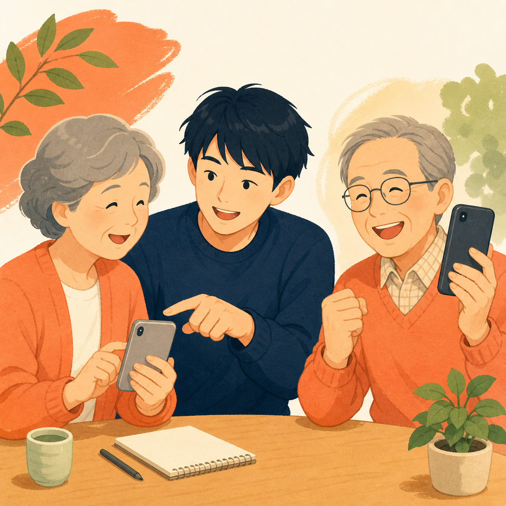
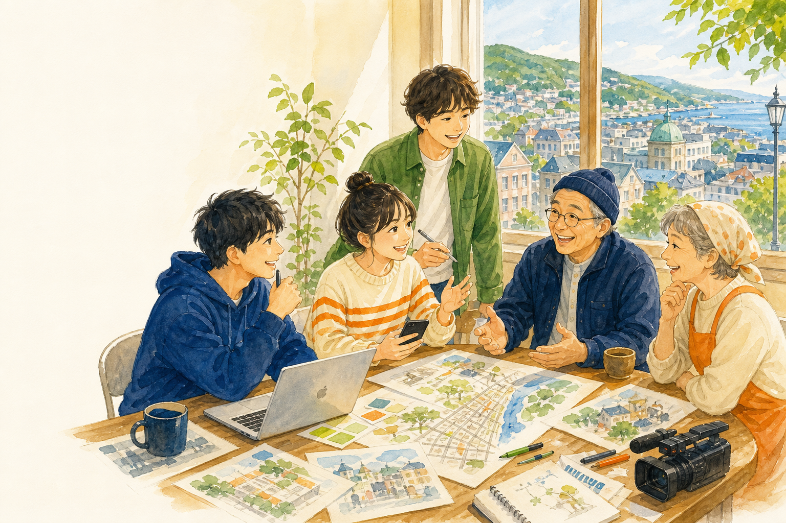
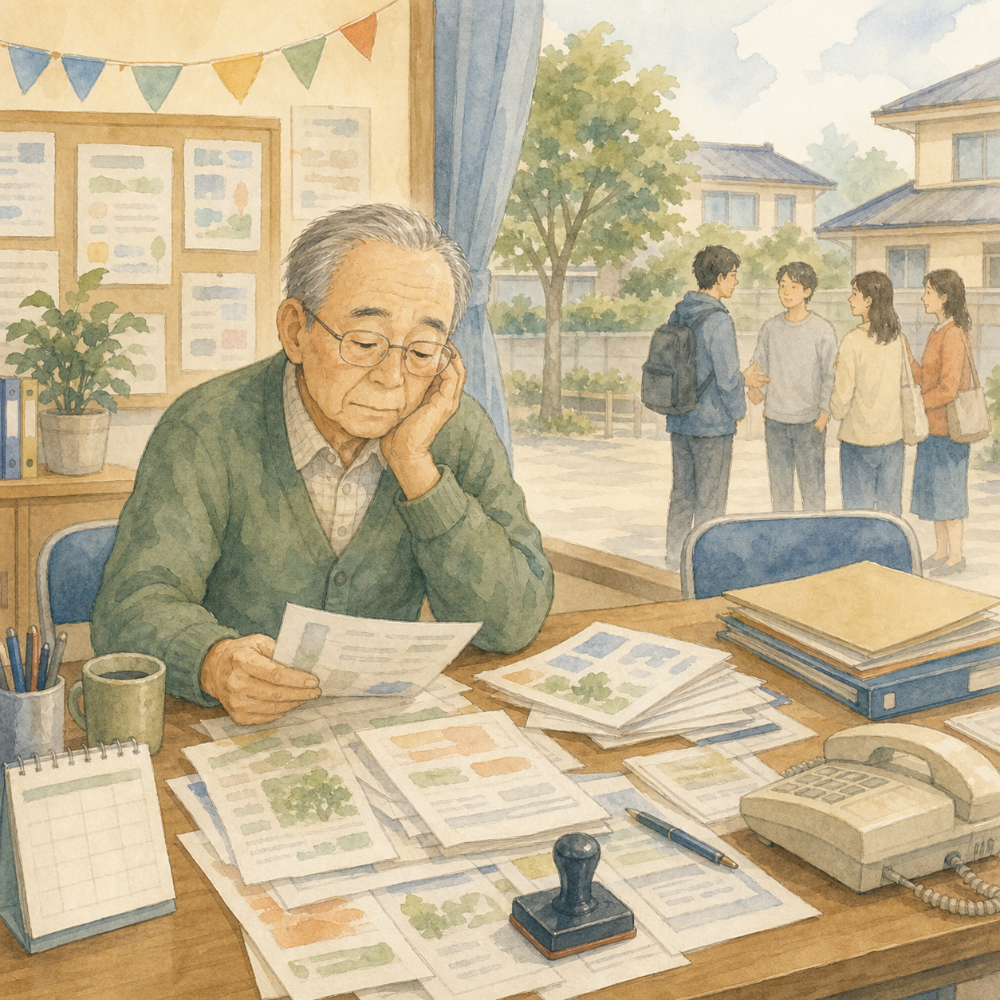

運用スタイル
無理のないデジタル化を、地域の手元から
高価な専用機材をそろえるのではなく、使い慣れたスマホやパソコン、無料で使えるツールを活かす方法を考えます。情報を共有できる土台を少しずつ整えます。
記事を読む →OUR ACTIVITIES
デジ活チームの活動は、地域の声から始まります。小さく試して、話し合い、よりよい形へ。活動の記録をここに追加していきます。
ACTIVITY ARCHIVE
新しい活動を追加するときは、下の活動カードをコピーして、日付・画像・本文を書き換えるだけです。

運用スタイル
高価な専用機材をそろえるのではなく、使い慣れたスマホやパソコン、無料で使えるツールを活かす方法を考えます。情報を共有できる土台を少しずつ整えます。
記事を読む →


活動は、これからも増えていきます。